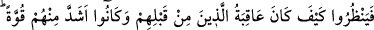

ALLÂH’IN KANUNUNDA
ASLA BİR DEĞİŞME BULAMAZSIN
42. Kendilerine bir uyarıcı (peygamber) gelirse, herhangi bir milletten daha çok
doğru yolda olacaklarına dair bütün güçleriyle Allah’a yemin etmişlerdi. Fakat
onlara uyarıcı (Muhammed) gelince, bu, onların haktan uzaklaşmalarından başka
bir şeyi arttırmadı.
43. Çünkü onlar yeryüzünde büyüklük taslıyor ve kötü tuzaklar kuruyorlardı.
Halbuki kişi kazdığı kuyuya kendi düşer. Onlar öncekilerin kanunundan (onlara
uygulanandan) başkasını mı bekliyorlar? Allah’ın kanununda asla bir değişme
bulamazsın, Allah’ın kanununda kesinlikle bir sapma da bulamazsın.
44. Bunlar yeryüzünde gezip de kendilerinden öncekilerin sonunun nasıl olduğunu
görmediler mi? Halbuki onlar, bunlardan daha güçlü idiler. Ne göklerde ne de yerde
Allah’ı âciz bırakacak bir güç vardır. O, bilendir, güçlüdür.
45. Eğer Allah, yaptıkları yüzünden insanları (hemen) cezalandırsaydı,
yeryüzünde hiçbir canlı yaratık bırakmazdı. Fakat Allah, onları belirtilmiş bir
süreye kadar erteliyor. Vakitleri gelince (gerekeni yapar). Kuşkusuz Allah, kullarını
görmektedir.